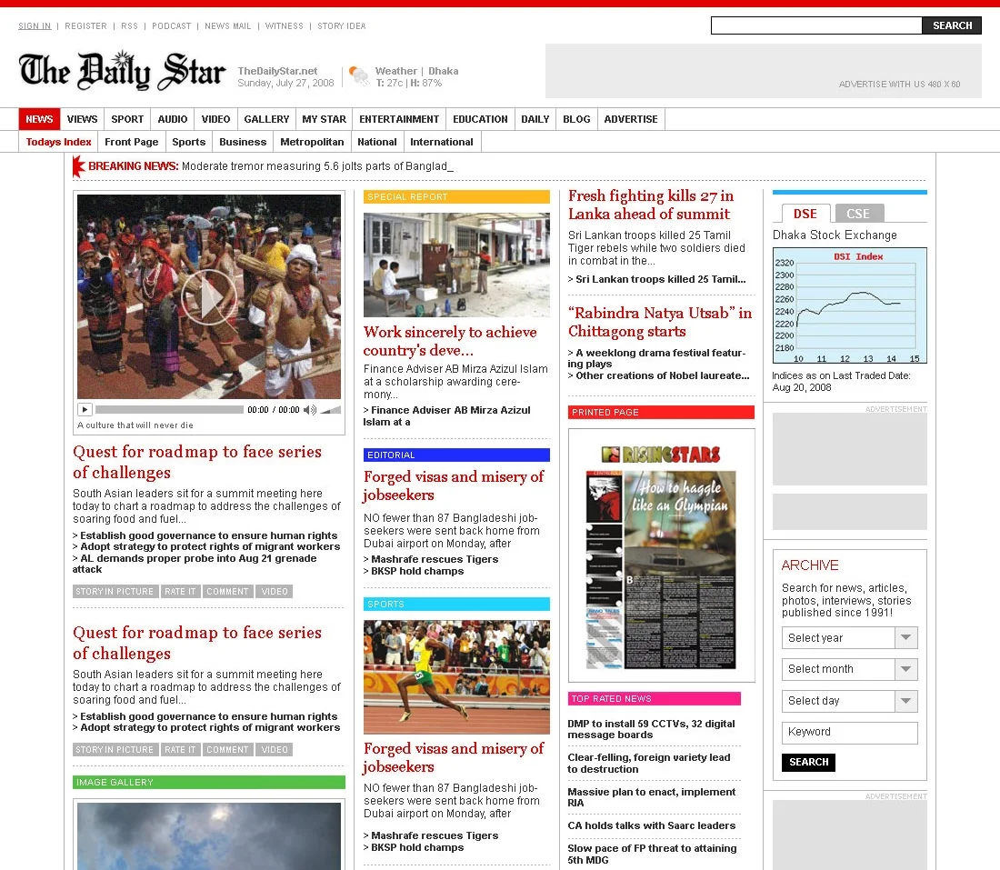
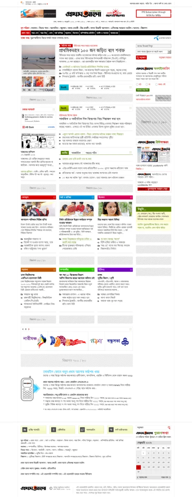
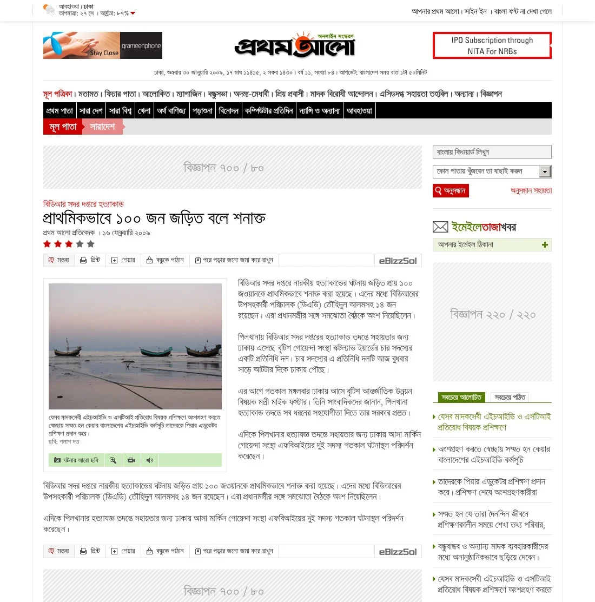
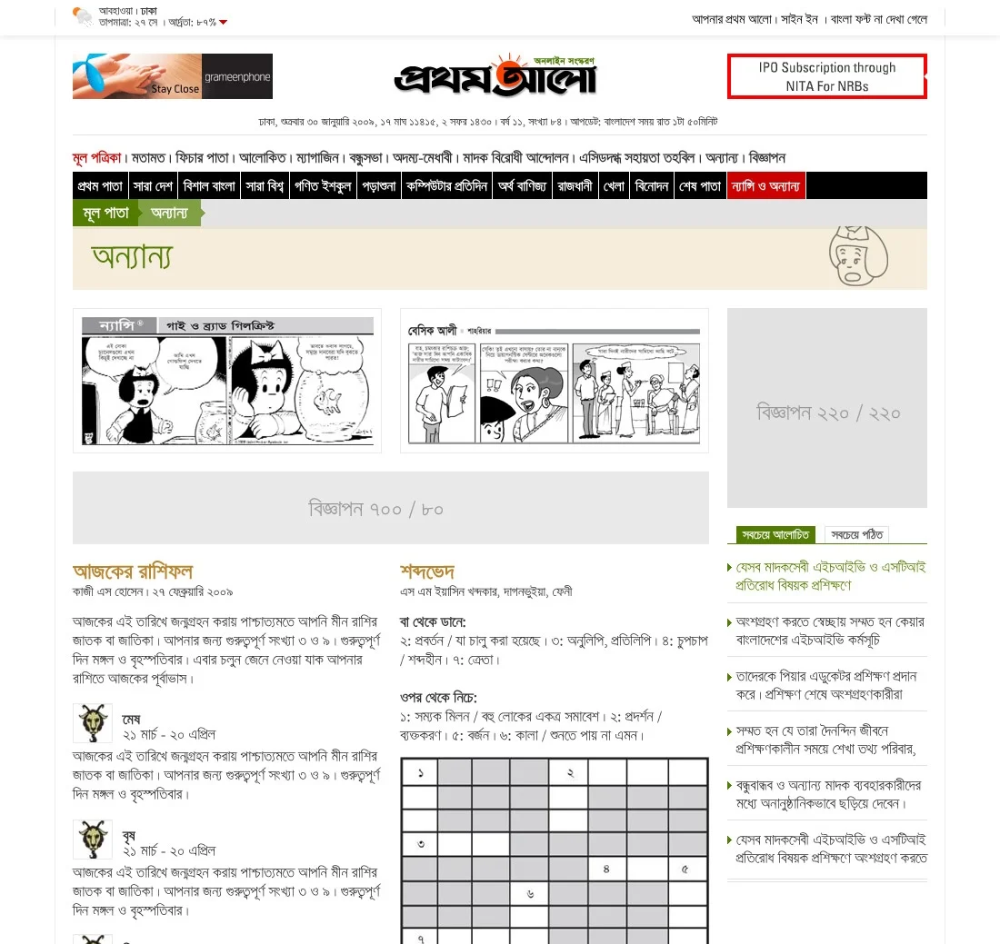
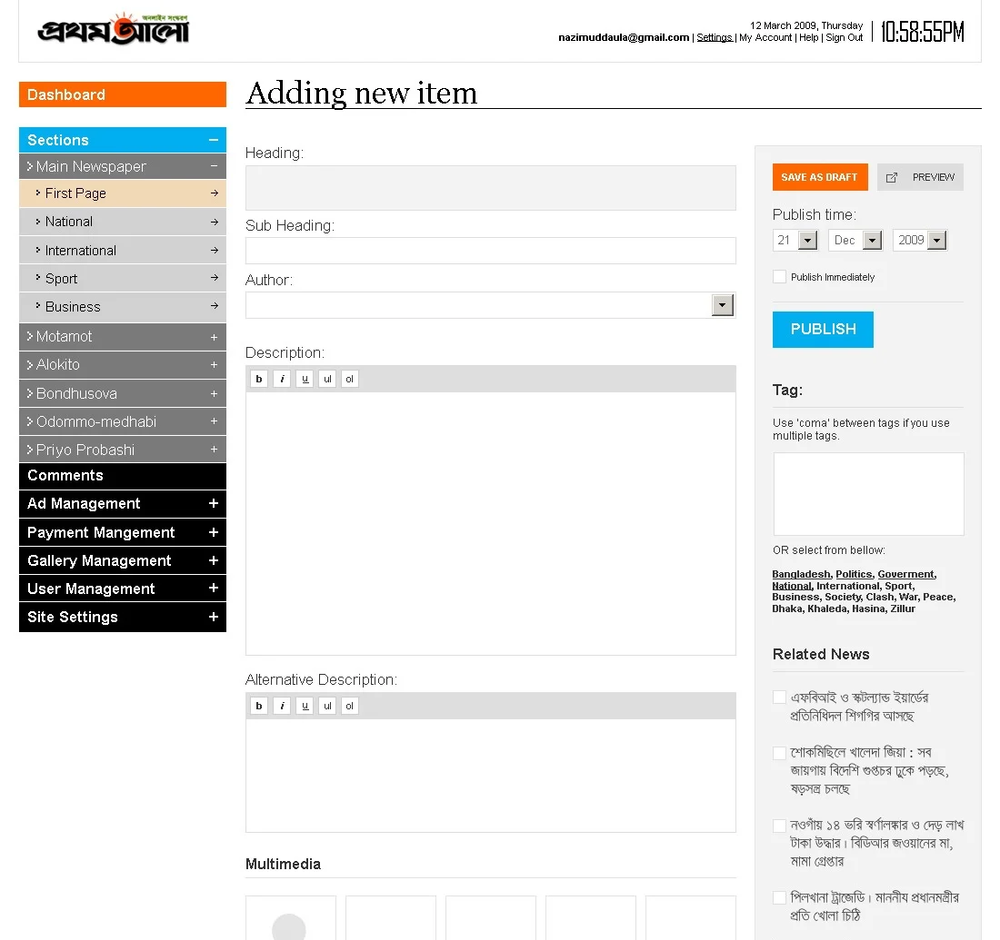

The Daily Star was the country's most widely read English-language paper. Prothom Alo was the most popular Bangla news brand, in print and, eventually, online. Between them, these two papers reached a scale most local businesses at the time could only imagine: wide print circulation, deep institutional trust, and household name recognition across the entire country.
Neither project was something I chased. Both came to me. I was working as a freelance designer at the time, and in each case, the newspaper's team found me and brought the offer, rather than the other way around. That still feels significant looking back, it meant the work had to earn its reputation before I ever had to pitch it.
The Daily Star project came first, in 2007, and became my reference point for what followed. It was the first time I was trusted with a full news platform redesign, and it taught me things no design brief could have prepared me for.
This was also my first real exposure to just how massive a day-to-day editorial process actually is. I hadn't fully understood, before this, that a newsroom isn't just people writing stories, it's a constant, moving machine of decisions, deadlines, and hierarchy. Doing the job well meant more than good design. It meant learning to navigate internal politics and process, understanding who actually needed to sign off on what, and why.

I designed multiple variations for the homepage and other key pages, and honestly can't remember which version eventually went live. This is a sample of the redesigned Daily Star website.
What shows up on screen or on the front page almost never tells the real story of how it got there. Behind even a simple layout decision, there was usually a longer, messier conversation I wasn't originally part of. I also picked up the common terminology of a news story for the first time, terms with specific use cases and underlying meaning I'd never had reason to learn before, and understanding that vocabulary properly changed how I approached designing for editorial content afterward.
One detail that's stuck with me since: the choice of certain fonts wasn't purely about readability. It was also, quite deliberately, about saving ink, a constraint I never would have thought to design around without this project.
Responsive design wasn't a topic anyone was discussing in 2007, the concept simply didn't exist yet in the way we think of it now. So instead, I designed multiple distinct versions of the site, each aligned to a different column structure, to account for how differently the layout needed to behave depending on the reader's setup. It was a much more manual, deliberate way of solving a problem that would later just be handled by fluid, responsive layouts.
It's easy to underestimate now just how difficult it was to build a proper Bangla-language website at that time. Most of the print and web content management infrastructure in Bangladesh still ran on ASCII fonts, not Unicode, which meant Bangla text on the web was often inconsistent, unreliable to render correctly across browsers, and painful to search or manage as structured content. There was no shared standard the way there is today.

The very long homepage of Prothom Alo. I had to type all the text by hand, since design tools couldn't read Unicode fonts at the time.
On top of that, these weren't small brochure sites. These were newspapers, publishing constantly, at real traffic scale, with archives stretching back years and editorial teams who needed to publish fast, every single day. A redesign had to hold up under daily pressure, not just look good in a mockup.
Where The Daily Star was English, Prothom Alo was Bangla, and everything that made Bangla web content difficult at the time applied here directly and at much larger scale. After an initial design was selected, the scope grew well beyond just the visual redesign, they needed a complete solution: a content management system built for this reality, the full website design and development process, hosting, and a year of maintenance. I brought in a tech company I'd worked with part-time to help deliver it, and led the project with genuinely zero prior experience managing something this size.
Individual article pages had to hold up under real reading conditions in Bangla, at a time when rendering the script correctly was still a genuine technical challenge.

The most visited page on Prothom Alo, the news detail page. It's basically a money-making machine.
My approach stayed simple, on purpose. Rather than trying to solve every technical and organizational problem at once, I focused on a few practical moves that made the biggest difference.
Category pages needed their own structure too, enough to browse a beat without feeling like a stripped-down version of the homepage.

Prothom Alo had so many category pages that at some point I stopped designing them individually. Later, it became templated.
None of it mattered without a CMS the editorial team could actually run day to day, built around Bangla content instead of retrofitted for it.

Looks simple, but it had massive technical complexity under the hood. The custom CMS built for Prothom Alo's editorial team.
The redesigned Prothom Alo website took about a year from design to development, and it was a strong success from the very first day, strong enough that Prothom Alo wrote and published their own article about the project and the team behind it. Years later, the irony isn't lost on me: as the print edition has struggled, the website that once fought for basic resourcing is now considered one of the company's genuine money-making assets.
These two projects, more than almost anything else early in my career, taught me that big, well-known institutions aren't necessarily technically sophisticated ones. Prothom Alo and The Daily Star were both giants in reach and trust, but under the hood, they were wrestling with problems as fundamental as how to even render their own language correctly on a screen. Being trusted to solve that, without chasing the opportunity myself, is still one of the things I'm proudest of from that period.
"I've always felt strangely good about this unpaid, glorified task."
There's one more thing I only realized while writing this down, years later. I was never actually paid for the work I did on Prothom Alo. I brought in a software development company partway through the project, and they were never able to pay me either, financial constraints on their end. I honestly don't know if that was a good decision or a bad one. But looking back, I've always felt strangely good about this unpaid, glorified task. It's stayed with me not as a loss, but as one of those things you do simply because you believe in it.